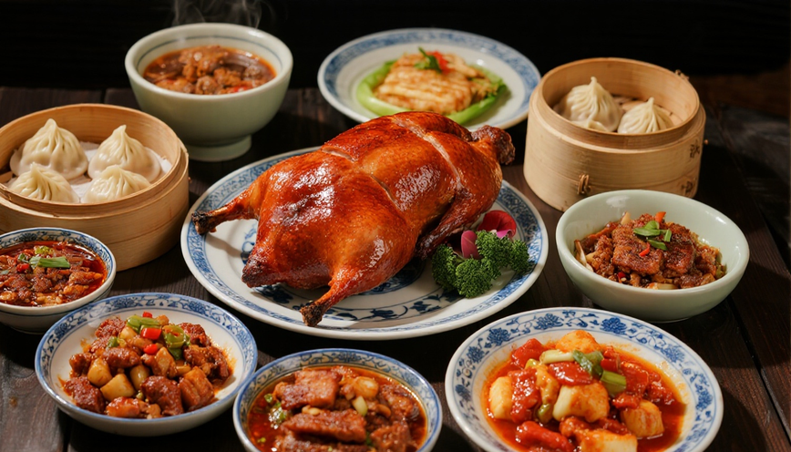

Chinese cuisine is a diverse and flavorful style of cooking that is known for its use of bold flavors, aromatic spices, and fresh ingredients. It's one of the oldest and most complex cuisines in the world, with a rich history that dates back thousands of years.